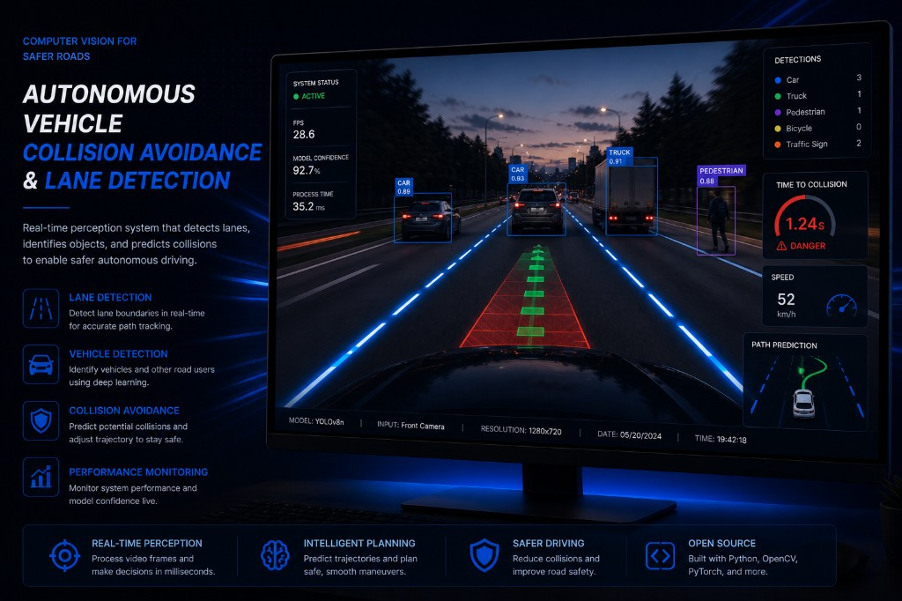

Autonomous Vehicle Collision Avoidance & Lane Detection
An autonomous driving perception and safety project combining lane detection and collision avoidance to enable real-time driving decisions. I built a computer vision pipeline to detect lane boundaries from video frames, estimate vehicle position, and trigger collision-avoidance responses to obstacles ahead under noisy, real‑time conditions.
Learn more